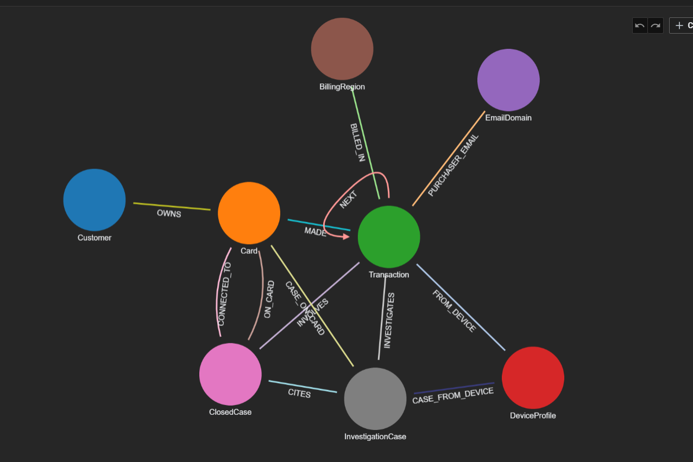

Agentic fraud investigation on TigerGraph — evidence-driven, policy-compliant, explainable
Each investigation touches transaction databases, device profiles, customer history, closed case archives, regulatory policies, and pattern libraries — all in different systems. By the time a human analyst pieces the picture together, the window for effective action has often closed.
JEVelric is a fraud investigation agent that handles the full lifecycle: from an initial trigger through evidence gathering, uncertainty assessment, policy-compliant action, and a written case record. It processes all 20 HHGOA benchmark cases end to end.
Accepts risk scores, customer reports, or analyst requests. Retrieves transaction windows, device profiles, region clusters, email links, and closed case history from TigerGraph.
Computes fraud probability, identifies patterns (card testing, CNP, account takeover, out-of-region, undocumented), and applies deterministic policy rules R1–R10 to choose actions and approval routes.
When evidence is weak (R1), the agent requests customer validation or step-up auth, simulates the response, then re-evaluates. The recommendation can change — and the agent records exactly what changed and why.
Files SARs when policy requires it, writes investigation cases to TigerGraph as memory, and validates every ID and field against the live graph before emitting the case file.
TigerGraph supplies connected evidence. The assessment layer estimates risk and identifies a likely pattern; the orchestrator uses those signals to settle the case, while deterministic rules R1–R10 select actions and approval routes. The language model writes the explanation and SAR narrative. It does not choose policy actions or routes.
Current investigation flow. JEV is a future assessment option; it is not in the active runner.
TigerGraph is the live evidence store and case memory. Six parameterized GSQL queries retrieve connected transaction, customer, device, region, email, and closed-case evidence. An optional GRIP mode adds hybrid vector and graph retrieval for text knowledge; static mode remains the default.

Base HHGOA: 8 vertex types and 13 edge types. Additive GRIP corpus: 4 vertex types and 2 edge types. Live graph: 590,742 transactions.
Customer → Card → Transaction → DeviceProfile relationships power six GSQL queries: card_window, device_neighbors, region_cluster, email_cluster, closed_case_similarity, and customer_history. These retrieve structured evidence with entity IDs preserved — no raw dataframes.
Static mode assembles local policy and pattern text with graph-derived evidence. Optional GRIP mode searches an ingested corpus of policy, pattern, and closed-case narratives with hybrid vector and graph retrieval. No regulatory reference corpus is currently loaded.
After each investigation, the agent writes an InvestigationCase vertex with edges to involved cards, transactions, and cited closed cases. Later cases retrieve these as similar_prior_cases — the agent's memory improves with every run.
HEADER="false". Loading job status and live graph counts were checked between chunks until the graph reached exactly 590,742 Transaction vertices.
cases/ directory contains one answer for each of the 20 HHGOA cases. The static set passed structural and graph-backed validation; public dataset fraud labels were not used to infer outcomes.